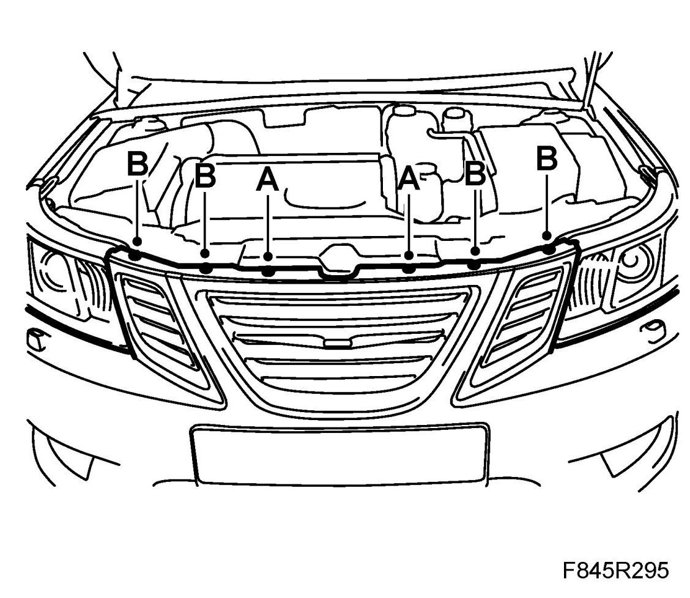
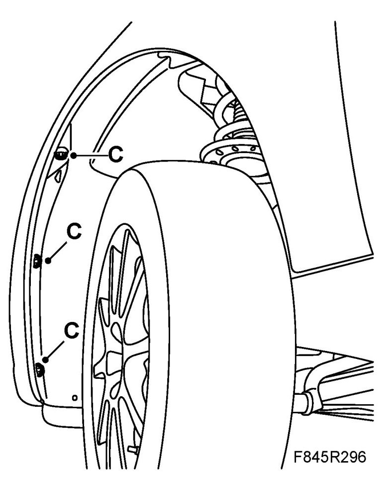
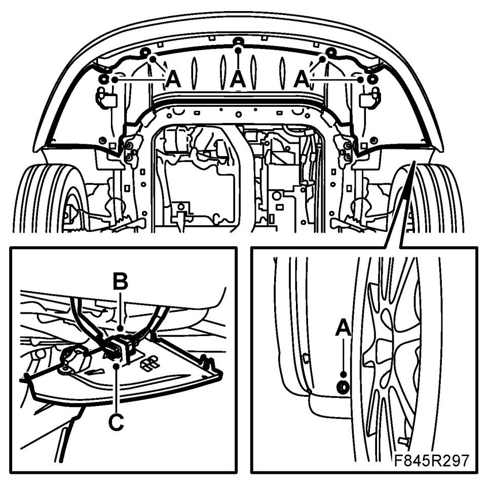
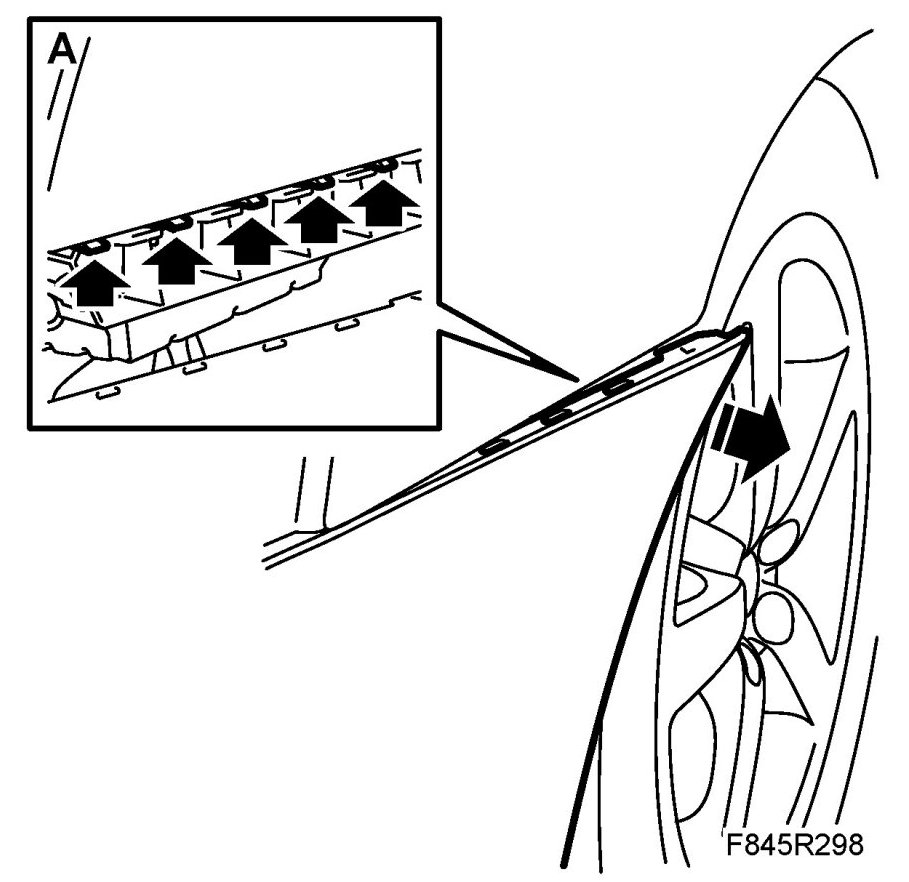
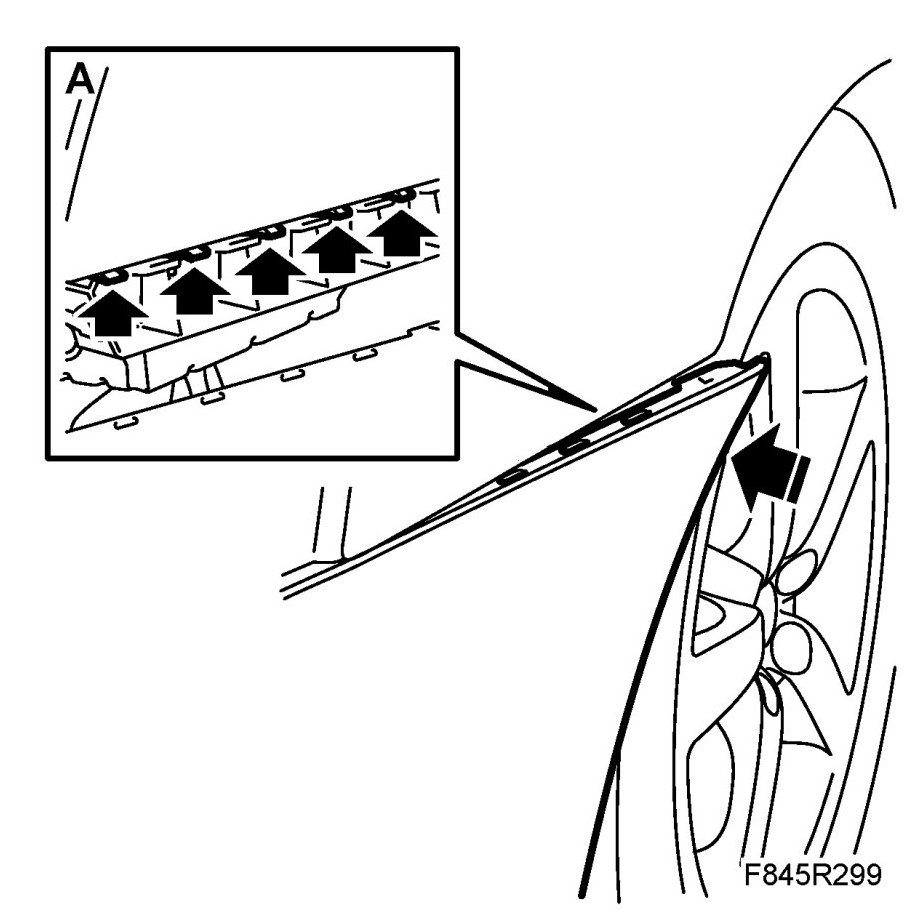
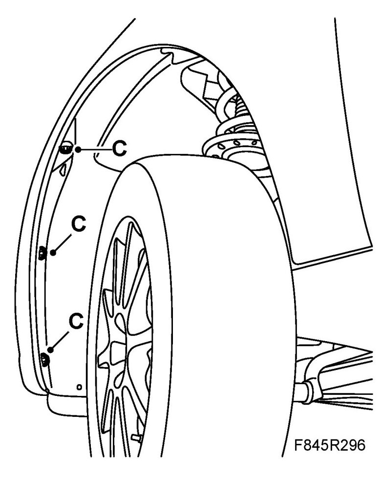
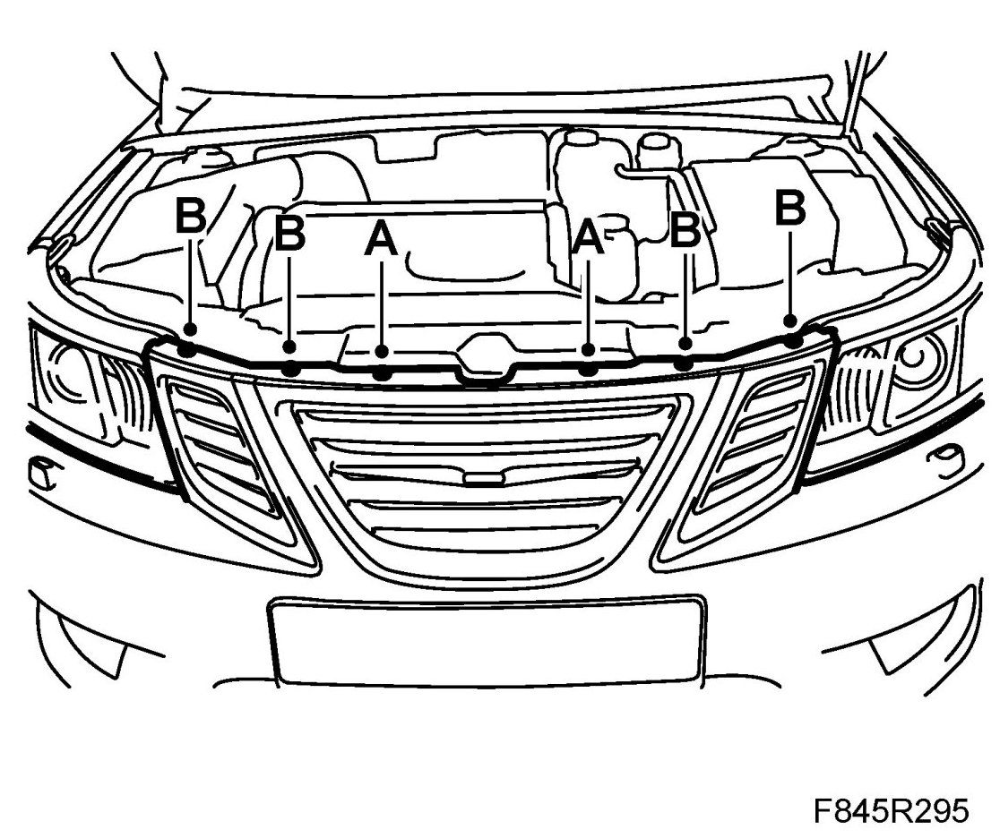
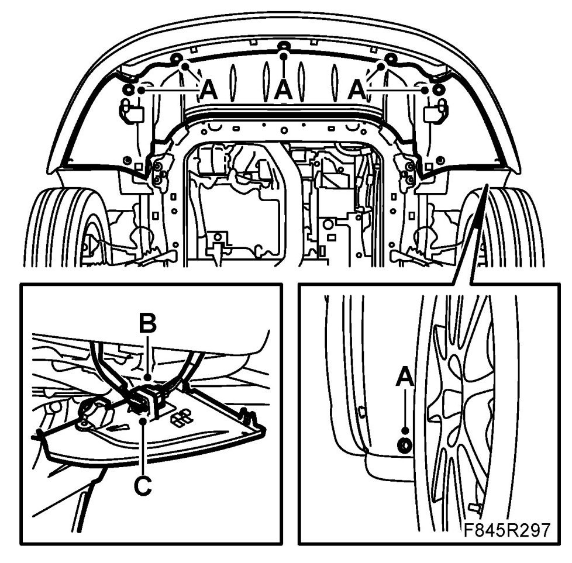

Front Bumper Cover / Fascia: Service and Repair
Bumper Shell, Front
To remove
1. Remove the upper radiator member's clips (A) and bolts (B)

2. Raise the car.
3. Remove the bumper bolts (C) in the wing liner.

4. Remove the spoiler shield's bolts (A). Unplug the connector (B) and remove connector (C).
Cars with headlamp washers: Detach the washer hose. Suspend it and seal as necessary.

5. Pull the corner of the bumper shell (A) loose from the holder's mountings.

6. Lift off the bumper shell.
To fit
1. Check that the cellular block is in place in the shell.
2. Position the bumper. Press the shell back and press the shell clips into the holder (A).

3. Fit the bumper bolts (C) to the wing liner.

4. Fit the clips (A) and bolts (B) to the upper radiator member.

5. Fit the connector (C) and plug in connector (B). Fit the spoiler shield bolts (A).
Cars with headlamp washers: Fit the washer hose.

6. Lower the car and check the fit of the bumper shell.